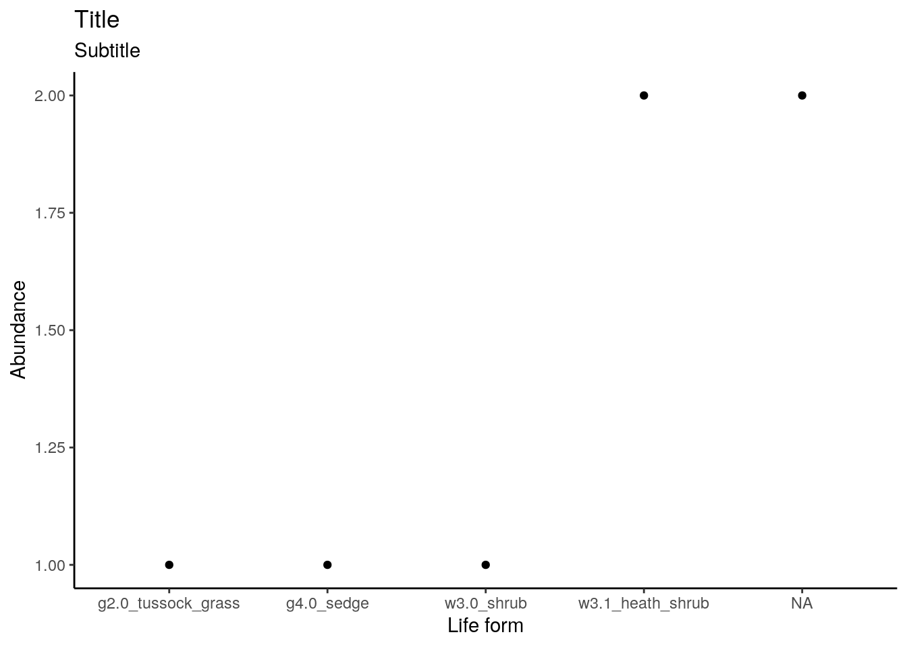
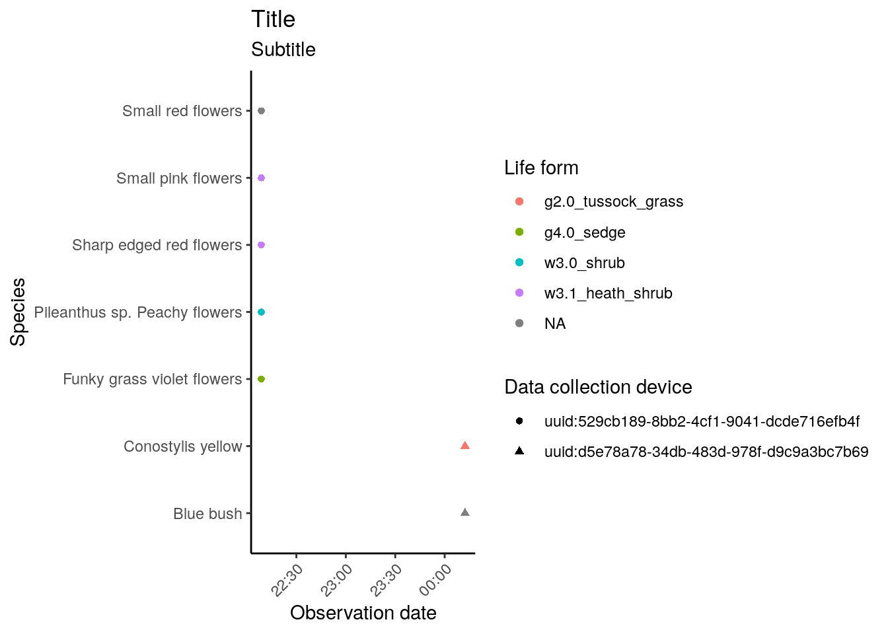

This vignette demonstrates ruODK’s workflow to extract data from ODK Central’s OData service endpoint, and to prepare the data and the media attachments for further analysis and visualisation.
The demonstrated workflow is roughly equivalent to ODK Central’s “Export all data”, which downloads all submissions and all repeating subgroups as CSV spreadsheets, and all media attachments in a local subfolder “attachments”.
An alternative pathway to getting data out of ODK Central is to use the REST API as documented (with live examples in multiple programming languages) at the ODK Central API docs.
The OData service URL is shown in the form’s “Submissions” tab > “Analyze via OData” on ODK Central. It contains base URL, project ID, and form ID and is used by ruODK::ru_setup().
# ODK Central's OData URL contains base URL, project ID, and form ID
# ODK Central credentials can live in .Renviron, see vignette "setup"
ruODK::ru_setup(
svc = "https://sandbox.central.opendatakit.org/v1/projects/14/forms/build_Flora-Quadrat-0-4_1564384341.svc",
un = Sys.getenv("ODKC_TEST_UN"),
pw = Sys.getenv("ODKC_TEST_PW")
)
# Canned data
data("fq_svc")
data("fq_meta")
data("fq_raw")
data("fq_raw_strata")
data("fq_raw_taxa")To extract data from the OData API endpoints, we have to:
Let’s start off with the service document.
We’ll use the included example data fq_svc.
| name | kind | url |
|---|---|---|
| Submissions | EntitySet | Submissions |
| Submissions.vegetation_stratum | EntitySet | Submissions.vegetation_stratum |
| Submissions.taxon_encounter | EntitySet | Submissions.taxon_encounter |
ruODK provides the names and urls of the service endpoints as tibble. We see the main data available under the url Submissions, and repeating groups called taxon_encounter and vegetation_stratum in the ODK form under the url Submissions.taxon_encounter and Submissions.vegetation_stratum, respectively.
The number and names of repeating subgroups of course depends on the ODK form.
Next, let’s get the metadata to review our data schema. While we can download the submission data without it, the metadata document contains information about field data types and attachment names. Future versions of ruODK might automate these steps.
Now let’s download the form submissions and, separately, repeating form groups.
fq_raw <- odata_submission_get(table = fq_svc$name[1])
fq_strata <- odata_submission_get(table = fq_svc$name[2])
fq_taxa <- odata_submission_get(table = fq_svc$name[3])The output of the above code is provided as data objects fq_raw (main submissions of form Flora Quadrat 0.4), fq_taxa (repeated group “Taxon Encounter” within a Flora Quadrat), and fq_strata (repeated group “Vegetation Stratum” within a Flora Quadrat).
The function ruODK::odata_submission_get returned the original XML response as a nested list of lists. To analyse and visualise the data, this nested list of lists must be transformed into a rectangular shape. The function ruODK::odata_submission_parse recursively unnests list columns using tidyr::unnest_wider. Unnamed columns, notably the anonymous lat/lon/alt coordinates, are named automatically to become unique (a feature of tidyr::unnest_*()), and then sanitised using the helper janitor::clean_names().
In this example, we clean up the output further by renaming some columns, notably the main coordinates from x13 and x14 to longitude and latitude.
The vectorised function ruODK::attachment_get downloads and links attachments like photos and other media to a local, relative path. This will take some time during the first run; once the files exist locally, the download will be skipped. Read ??ruODK::attachment_get on specifying form field names (or parts thereof) indicating a media attachment; the default are any names containing “photo”.
The date formats are parsed from ISO8601 timestamps into POSIXct objects with ruODK::parse_datetime. We use our local timezone (GMT+08) in this example. Read ??ruODK::parse_datetime on specifying form field names (or parts thereof) indicating a date field; the default are any names containing “time”.
The trailing invisible is a neutral operation to allow trailing magrittr pipes (%>%) while commenting individual lines of the pipelines in or out.
The repeated subgroup taxon_encounter is joined with the main observation to receive a (repeated) copy of the main observation’s values (such as observation time and habitat description). We will do the same to the other repeated subgroup vegetation_stratum.
For clarity, we enable verbose messages from odata_submission_parse and preserve the message output in the code chunk options with message=TRUE.
We use a custom local path for attachments (loc). This results in a smaller installed package size for ruODK, as it shares the attachment files with the other vignettes. The default is a local folder media.
ord <- "YmdHMSz"
tz <- "Australia/Perth"
loc <- fs::path("attachments", "media")
fq_data <- fq_raw %>%
ruODK::odata_submission_parse(verbose = TRUE) %>%
ruODK::parse_datetime(tz = "Australia/Perth") %>%
ruODK::parse_datetime(tz = "Australia/Perth", col_contains = "date") %>%
dplyr::rename(
longitude = x13,
latitude = x14,
altitude = x15
) %>%
dplyr::mutate(
quadrat_photo = ruODK::attachment_get(
id, quadrat_photo, local_dir = loc),
morphological_type_photo = ruODK::attachment_get(
id, morphological_type_photo, local_dir = loc),
mudmap_photo = attachment_get(
id, mudmap_photo, local_dir = loc)
) %>%
invisible()
#> New names:
#> * `@odata.context` -> .odata.context
#> Unnesting column 'value'
#> New names:
#> * `__id` -> .__id
#> * `__system` -> .__system
#> Found more nested columns, unnesting again.
#> Unnesting column '.__system'
#> Unnesting column 'meta'
#> Unnesting column 'location'
#> Unnesting column 'habitat'
#> Unnesting column 'perimeter'
#> Found more nested columns, unnesting again.
#> Unnesting column 'corner1'
#> Unnesting column 'corner2'
#> New names:
#> * type -> type...12
#> * coordinates -> coordinates...13
#> * properties -> properties...14
#> * type -> type...17
#> * coordinates -> coordinates...18
#> * … and 1 more problem
#> Unnesting column 'corner3'
#> New names:
#> * type -> type...20
#> * coordinates -> coordinates...21
#> * properties -> properties...22
#> Unnesting column 'corner4'
#> New names:
#> * type -> type...23
#> * coordinates -> coordinates...24
#> * properties -> properties...25
#> Found more nested columns, unnesting again.
#> Unnesting column 'coordinates...13'
#> New names:
#> * `` -> ...1
#> * `` -> ...2
#> * `` -> ...3
#> New names:
#> * `` -> ...1
#> * `` -> ...2
#> * `` -> ...3
#> New names:
#> * ...1 -> ...13
#> * ...2 -> ...14
#> * ...3 -> ...15
#> * properties...14 -> properties...16
#> * type...17 -> type...19
#> * … and 8 more problems
#> Skipping renamed column 'properties...14'
#> Skipping renamed column 'coordinates...18'
#> Skipping renamed column 'properties...19'
#> Skipping renamed column 'coordinates...21'
#> Skipping renamed column 'properties...22'
#> Skipping renamed column 'coordinates...24'
#> Skipping renamed column 'properties...25'
#> Found more nested columns, unnesting again.
#> Unnesting column 'properties...16'
#> Unnesting column 'coordinates...20'
#> New names:
#> * `` -> ...1
#> * `` -> ...2
#> * `` -> ...3
#> New names:
#> * `` -> ...1
#> * `` -> ...2
#> * `` -> ...3
#> New names:
#> * ...1 -> ...20
#> * ...2 -> ...21
#> * ...3 -> ...22
#> * properties...21 -> properties...23
#> * type...22 -> type...24
#> * … and 5 more problems
#> Skipping renamed column 'properties...21'
#> Skipping renamed column 'coordinates...23'
#> Skipping renamed column 'properties...24'
#> Skipping renamed column 'coordinates...26'
#> Skipping renamed column 'properties...27'
#> Found more nested columns, unnesting again.
#> Unnesting column 'properties...23'
#> New names:
#> * accuracy -> accuracy...16
#> * accuracy -> accuracy...23
#> Unnesting column 'coordinates...25'
#> New names:
#> * `` -> ...1
#> * `` -> ...2
#> * `` -> ...3
#> New names:
#> * `` -> ...1
#> * `` -> ...2
#> * `` -> ...3
#> New names:
#> * ...1 -> ...25
#> * ...2 -> ...26
#> * ...3 -> ...27
#> * properties...26 -> properties...28
#> * type...27 -> type...29
#> * … and 2 more problems
#> Skipping renamed column 'properties...26'
#> Skipping renamed column 'coordinates...28'
#> Skipping renamed column 'properties...29'
#> Found more nested columns, unnesting again.
#> Unnesting column 'properties...28'
#> New names:
#> * accuracy -> accuracy...28
#> * properties...31 -> properties
#> Unnesting column 'coordinates'
#> New names:
#> * `` -> ...1
#> * `` -> ...2
#> * `` -> ...3
#> New names:
#> * `` -> ...1
#> * `` -> ...2
#> * `` -> ...3
#> New names:
#> * ...1 -> ...30
#> * ...2 -> ...31
#> * ...3 -> ...32
#> Skipping renamed column 'properties...31'
#> Found more nested columns, unnesting again.
#> Unnesting column 'properties'
#> New names:
#> * accuracy -> accuracy...33
#> Filename is NA, skipping download.
fq_data_taxa <- fq_taxa %>%
ruODK::odata_submission_parse(verbose = TRUE) %>%
dplyr::rename(
lon = x6,
lat = x7,
alt = x8
) %>%
dplyr::mutate(
photo_in_situ = ruODK::attachment_get(
submissions_id, photo_in_situ, local_dir = loc)
) %>%
dplyr::left_join(fq_data, by = c("submissions_id" = "id")) %>%
invisible()
#> New names:
#> * `@odata.context` -> .odata.context
#> Unnesting column 'value'
#> New names:
#> * `__id` -> .__id
#> * `__Submissions-id` -> .__Submissions.id
#> Found more nested columns, unnesting again.
#> Unnesting column 'taxon_encounter_location'
#> Found more nested columns, unnesting again.
#> Unnesting column 'coordinates'
#> New names:
#> * `` -> ...1
#> * `` -> ...2
#> * `` -> ...3
#> New names:
#> * `` -> ...1
#> * `` -> ...2
#> * `` -> ...3
#> New names:
#> * `` -> ...1
#> * `` -> ...2
#> * `` -> ...3
#> New names:
#> * `` -> ...1
#> * `` -> ...2
#> * `` -> ...3
#> New names:
#> * `` -> ...1
#> * `` -> ...2
#> * `` -> ...3
#> New names:
#> * `` -> ...1
#> * `` -> ...2
#> * `` -> ...3
#> New names:
#> * `` -> ...1
#> * `` -> ...2
#> * `` -> ...3
#> New names:
#> * ...1 -> ...6
#> * ...2 -> ...7
#> * ...3 -> ...8
#> Unnesting column 'properties'
fq_data_strata <- fq_strata %>%
ruODK::odata_submission_parse(verbose = TRUE) %>%
invisible()
#> New names:
#> * `@odata.context` -> .odata.context
#> Unnesting column 'value'
#> New names:
#> * `__id` -> .__id
#> * `__Submissions-id` -> .__Submissions.idNote: A manually resized version of the original photos in this example live in the package source under docs/articles/attachments. To minimise package size, they were resized with imagemagick: find docs/articles/attachments/ -maxdepth 2 -type f -exec mogrify -resize 300x200 {} \;.
The unnesting could also be done manually by building up a pipeline, which stepwise unnests each list column. This requires knowledge of the data structure, which can either be looked up from the metadata, or by inspecting the raw data, fq_raw.
fq_data_diy <- tibble::tibble(value = fq_raw$value) %>%
tidyr::unnest_wider(value) %>%
# 1. find list columns:
tidyr::unnest_wider(`__system`) %>%
tidyr::unnest_wider(meta) %>%
# add more lines here to unnest other form groups
#
# 2. rename column names
dplyr::rename(
uuid = `__id`
# add more columns, e.g.
# longitude=`...1`, latitude=`...2`, altitude=`...3`
) %>%
# 3. handle media attachments
# dplyr::mutate(photo_field1 = attachment_get(data_url, uuid, photo_field1)) %>%
invisible()If we run odata_submission_get() with wkt=FALSE (the default), we will receive GeoJSON. Point GeoJSON parses with parse_submissions into separate columns for lat, lon, alt (soon accuracy). This is useful for e.g. leaflet maps which want lat and lon separately, see example map below.
If we run odata_submission_get() with wkt=TRUE (the default), we will not surprisingly receive WKT. This is useful for spatial objects with non-deterministic length like lines and polygons. If encountering WKT, parse_submissions simply retains the WKT string containing the respective entire geometry. This can further be turned into spatially enabled objects.
In future, we will add some examples for this use case here.
This section provides some examples of standard data visualisations.
Package leaflet provides interactive maps.
Constructing label and popup requires knowledge of the dataset structure.
leaflet::leaflet(width = 800, height = 600) %>%
leaflet::addProviderTiles("OpenStreetMap.Mapnik", group = "Place names") %>%
leaflet::addProviderTiles("Esri.WorldImagery", group = "Aerial") %>%
leaflet::clearBounds() %>%
leaflet::addAwesomeMarkers(
data = fq_data,
lng = ~longitude, lat = ~latitude,
icon = leaflet::makeAwesomeIcon(text = "Q", markerColor = "red"),
label = ~ glue::glue("{area_name} {encounter_start_datetime}"),
popup = ~ glue::glue(
"<h3>{area_name}</h3>",
"Survey start {encounter_start_datetime}</br>",
"Reporter {reporter}</br>",
"Device {device_id}</br>",
"<h5>Site</h5>",
'<div><img src="{quadrat_photo}"',
' height="150px" alt="Quadrat photo"></img></div>',
"<h5>Mudmap</h5>",
'<div><img src="{mudmap_photo}',
' height="150px" alt="Mudmap"></img></div>',
"<h5>Habitat</h5>",
"Morphological type: {morphological_type}</br>",
'<div><img src="{morphological_type_photo}"',
'height="150px" alt="Morphological type"></img></div>'
),
clusterOptions = leaflet::markerClusterOptions()
) %>%
leaflet::addLayersControl(
baseGroups = c("Place names", "Aerial"),
options = leaflet::layersControlOptions(collapsed = FALSE)
)leaflet::leaflet(width = 800, height = 600) %>%
leaflet::addProviderTiles("OpenStreetMap.Mapnik", group = "Place names") %>%
leaflet::addProviderTiles("Esri.WorldImagery", group = "Aerial") %>%
leaflet::clearBounds() %>%
leaflet::addAwesomeMarkers(
data = fq_data_taxa,
lng = ~lon, lat = ~lat,
icon = leaflet::makeAwesomeIcon(text = "T", markerColor = "green"),
label = ~ glue::glue("{field_name} {encounter_start_datetime}"),
popup = ~ glue::glue(
"<h3>{field_name}</h3>",
"Survey start {encounter_start_datetime}</br>",
"Reporter {reporter}</br>",
"Device {device_id}</br>",
"<h5>Taxon</h5>",
'<div><img src="{photo_in_situ}"',
' height="150px" alt="Taxon in situ"></img></div>',
"Specimen barcode: {voucher_specimen_barcode}</br>",
"Life form: {life_form}</br>"
),
clusterOptions = leaflet::markerClusterOptions()
) %>%
leaflet::addLayersControl(
baseGroups = c("Place names", "Aerial"),
options = leaflet::layersControlOptions(collapsed = FALSE)
)The data tibbles are now “tidy” for exploratory data analysis. See Hadley Wickam’s R for Data Science for more background.
# How many submissions per device?
fq_data %>%
dplyr::group_by(instance_id) %>%
dplyr::tally() %>%
knitr::kable()| instance_id | n |
|---|---|
| uuid:529cb189-8bb2-4cf1-9041-dcde716efb4f | 1 |
| uuid:d5e78a78-34db-483d-978f-d9c9a3bc7b69 | 1 |
# How many species sightings per life form?
fq_data_taxa %>%
dplyr::group_by(life_form) %>%
dplyr::tally() %>%
knitr::kable()| life_form | n |
|---|---|
| g2.0_tussock_grass | 1 |
| g4.0_sedge | 1 |
| w3.0_shrub | 1 |
| w3.1_heath_shrub | 2 |
| NA | 2 |
# GGplot of a pivot table
fq_data_taxa %>%
dplyr::group_by(life_form) %>%
dplyr::tally() %>%
ggplot2::ggplot(ggplot2::aes(x = life_form, y = n)) +
ggplot2::labs(
title = "Title",
subtitle = "Subtitle",
x = "Life form",
y = "Abundance"
) +
ggplot2::geom_point() +
ggplot2::theme_classic()
# GGplot with groups
fq_data_taxa %>%
ggplot2::ggplot(
ggplot2::aes(
x=encounter_start_datetime,
y=field_name,
colour=life_form,
shape=instance_id)) +
ggplot2::labs(
title="Title",
subtitle="Subtitle",
x="Observation date",
y="Species",
colour="Life form",
shape="Data collection device") +
ggplot2::geom_point() +
ggplot2::theme_classic() +
theme(axis.text.x = element_text(angle = 45, hjust = 1))
The rectangled data can now be exported. e.g. to CSV. Note that all list columns must be either unnested or dropped before exporting to CSV.
To reproduce the demonstrated workflow easily in RStudio, create a new RMarkdown document “From template” and select ruODK’s template “odata”, or run rmarkdown::draft("test.Rmd", "odata", package="ruODK").
Make sure to install a fresh version of {ruODK} to get the latest and greatest template.